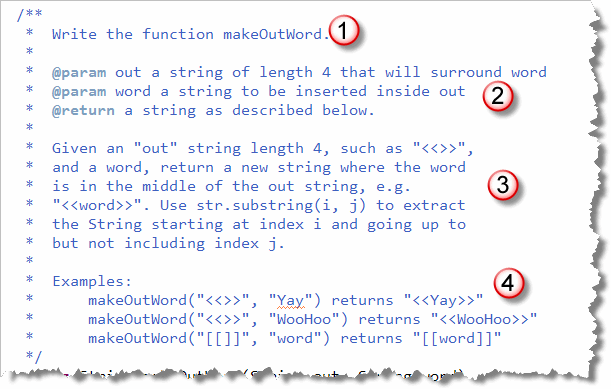
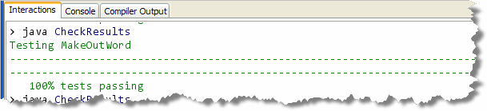

Let's, get some practice writing your
own functions. Look in Chapter 5—Writing Functions or
in the instructions for Lab 5A if you can't remember the steps. You
do want to get into shape for the programming proficiency problems, don't you?
Let's, get some practice writing your
own functions. Look in Chapter 5—Writing Functions or
in the instructions for Lab 5A if you can't remember the steps. You
do want to get into shape for the programming proficiency problems, don't you?
The makeOutWord Function
You'll find MakeOutWord.java in your code folder this week. Here's the specification for the problem with the function name (1), the Javadoc parameter and return value specification (2), a narrative description (3), and several examples (4):

To submit your assignment, visit this link to submit your finished assignment. You must complete it before the deadline get credit for this assignment.
You should stop reading right now and try to solve
the makeOutWord() problem, using the techniques you
learned in lecture. If you have difficulty, come
back here for some clues.
The Skeleton
Using the narrative, you should be able to complete the basic
function skeleton, which looks like this:

The Completed Function
To complete the function, you need to split the first parameter (out)
in two pieces. The specification guarantees that the first parameter
will always be four characters long. That means you can use the
two-parameter version of the substring() function to
grab the first two characters (which I've stored in a variable named
first), and the one-parameter version of substring()
to grab the last two characters:
 Once you have the first parameter split in two, you just paste the
two pieces around the second parameter (
Once you have the first parameter split in two, you just paste the
two pieces around the second parameter (word) using
concatenation, and store the result back in result.
If you run CheckResults, you'll see that everything is now just fine:
